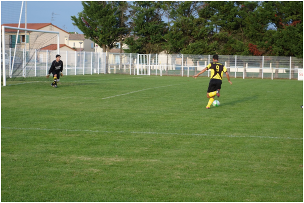
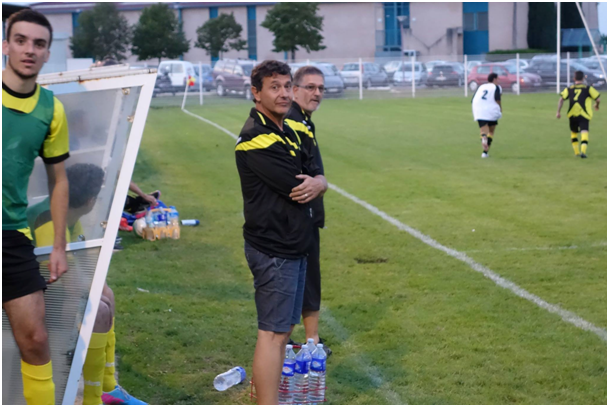
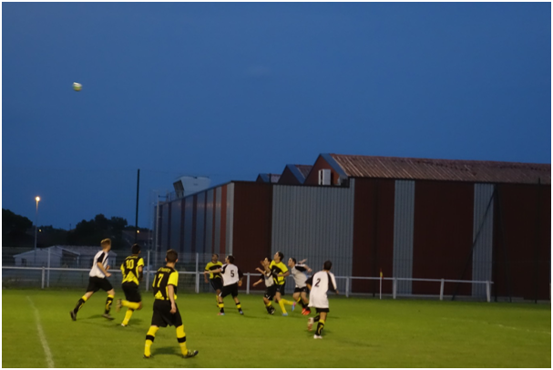
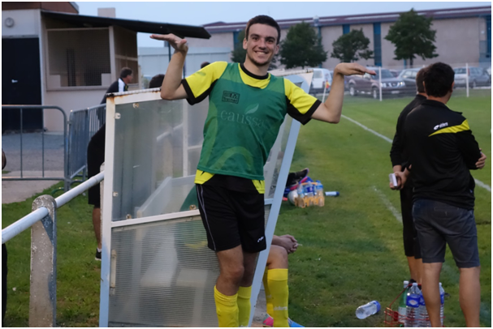

Merville - TaoupatsPar Dédé
Bonjour à tous ! Nous sommes le samedi 4 octobre et c’est le quatrième match de la saison pour les Taoupats, qui ce soir, affrontent le FC Merville 2, dans le derby jaune et noir ! Voici la composition de l’équipe :
Gardien : Alexy C. Défenseurs : Maxime D. – Dédé – Olivier C. – Maxime S. Milieux : Jordan – Tony Edouard – Julien B. – Julien G. Attaquant : Mickaël Remplacants : Rémy, Paul,
Après leur formidable parcours en coupe du Midi, les Taoupats sont de retour en championnat.
Ils affrontent leur voisin Mervillois, qui après avoir fait les 3 résultats possibles : 1 défaite, 1 match nul et 1 victoire. Ils vont essayer de confirmer le succès obtenu lors de la dernière journée.
Le match débute sur les chapeaux de roue : d’entrée de jeu, les Taoupats récupèrent le ballon et suite à un beau mouvement collectif, Mickaël déborde côté droit et centre pour Edouard qui n’a plus qu’à pousser le ballon au fond des filets : 1-0 pour les Taoupats après seulement 46 secondes de jeu !
Mickaël, sur le point de faire une passe décisive pour Edouard (ou frapper au dessus du but)
Les Mervillois sont pris à froid et continuent de subir. Après deux alertes successives, ils cèdent une nouvelle fois sur une passe en profondeur de Jordan pour Julien G., qui file gagner son duel face au gardien : 2-0 ! Après seulement 8 minutes de jeu ! Et premier but de Julien G. de la saison, qui va lui faire du bien, lui qui était resté muet depuis le début de la saison !
Le premier quart d’heure est quasiment à sens unique, mais les débats vont se rééquilibrer. Les esprits s’échauffent quelque peu et Merville parvient à se procurer des contres de plus en plus dangereux. Alexy doit s’interposer en duel face au n°15 à la 30ème minute. L’alerte est sonnée. A la 35ème, le n°8 récupère un ballon mal dégagé et décoche une frappe de 20 mètres en lucarne, côté droit du gardien. Alexy parvient à toucher le ballon, mais pas assez : le ballon touche le poteau et longe la ligne pour rentrer dans le petit filet opposé : 2-1 !
Les Mervillois reprennent espoir, sont plus présents dans les duels et leurs contres rapides sont dangereux. Daux parvient tout de même à se créer de belles occasions, bien construites, mais ne parvient pas à refaire le break. L’arbitre siffle la mi-temps.
La mi-temps est houleuse : Julien B. joue à la racaille des bacs à sable (ou des bacs à gravier). Guillaume, le coach, pousse un coup de gueule pour remettre ses hommes dans le bon sens.
Et ça marche plutôt bien, puisque dès la reprise, les Taoupats se remettent dans le bon sens de la marche. Ils se procurent de bonnes occasions, à l’image du débordement d’Edouard côté droit, qui centre sur Paul, qui écrase trop sa frappe à la 47ème.
L’art du coaching gagnant, by Guigui et Cloclo
A la 54ème minute Rémy, rentré côté gauche, récupère un ballon. Il déborde côté gauche, prend de vitesse son défenseur et repique à l’intérieur. Il dribble le gardien et marque ! 3-1 ! Premier but de Rémy, qui, après avoir fait deux matches exceptionnels en tant que gardien, se révèle également être un renard des surface hors normes !
Tony, Julien, Paul : tous trois vont se procurer de grosses occasions de la 55ème à la 65ème minute. Tout trois vont manquer leur frappe. Les Taoupats enchaînent les bonnes occasions, mais n’arrivent pas à tuer le match…
Les joueurs ne regardent pas la lune, mais le ballon.
Dans les 25 dernières minutes, les Mervillois vont reprendre légèrement le dessus : ils prennent la possession de balle à leur compte et se montrent de plus en plus pressants. A la 81ème minute, l’arbitre leur accorde même un pénalty discutable, sur une frappe qui touche le coude de Dédé le long du corps… Mais le n°15 manque sa frappe et tire au-dessus. Cependant, les Mervillois ne s’arrêtent pas là pour autant : à la 87ème minute, le n°15, encore lui, déborde côté droit et centre en retrait pour son coéquipier n°6 qui marque : 3-2 !
Il reste alors 5 minutes de jeu. Les deux équipes vont chacune se procurer une dernière occasion. Mais le score en reste là et l’arbitre renvoie les deux équipes aux vestiaires sur le score de 3-2 pour les Taoupats, qui remportent le derby !
Nous noterons que Tony a quasiment fait tout le match, malgré son âge avancé. Maxime S. a enfin accepté de jouer à son vrai poste. Enfin, Julien B. a réussi à jouer pendant la deuxième mi-temps, chose qu’il n’avait pas accomplie depuis deux matches…
Maxime S., la mouette latérale
Merci à Michel B. pour les photos et merci à nos supporters venus nous encourager !